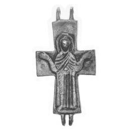

Catalog › CE-0008 · LOV1999-2
Encolpion bivalv cu Răstignirea și Maica Domnului Orantă
sec. VII–XI (601–1100) · Vésztő, dealul Mágori, Békés (Kom.), Ungaria · Muzeul Național Maghiar, Budapesta, inv. 1939.96
double-sided reliquary cross (enkolpion), bronz; c. VII–XI (601–1100); found at Vésztő, dealul Mágori, Békés (Kom.), Ungaria; kept at Muzeul Național Maghiar, Budapesta.



Identificare
- Categorie
- Encolpion bivalv (relicvar)
- Material
- Bronz
- Tehnică
- Turnare în relief
- Dimensiuni
- Î 70 × L 35 mm
Iconografie
- Avers
- Răstignirea (Hristos în colobium)
- Descriere avers
- Hristos în colobium, cu nimb cruciform și o cruce deasupra capului.
- Revers
- Maica Domnului Orantă
- Descriere revers
- Maica Domnului în atitudine de orantă, în relief.
Datare și atribuire
- Datare
- sec. VII–XI (601–1100)
- Centru
- Siria–Palestina
Descoperire
- Localitate
- Vésztő, dealul Mágori
- Regiune
- Békés (Kom.)
- Țară
- Ungaria
- Context
- Necropolă / mormânt
- Anul
- 1908
- Coordonate
- 46.9565° N, 21.1936° E
- Precizia locului
- Doar localitatea
Păstrare și referințe
- Colecție
- Muzeul Național Maghiar, Budapesta
- Nr. inventar
- 1939.96
- Bibliografie
- Zs. Lovag, Mittelalterliche Bronzegegenstände des Ungarischen Nationalmuseums (Catalogi Musei Nationalis Hungarici, Series Archaeologica III), Budapest, 1999, p. 23, cat. nr. 2, reprodusă la Abb. 2 a-b (planșele, p. 129). Bibliografie citată în sursă: Szeghalmy 1936, 376; Bárány-Oberschall 1953, 212; Wessel 1960, 108, Abb. 8; Lovag 1971, 146, Fig. 1/2 a, b; Lovag 1979, 8, Abb. 1; Lovag 1982, 159, Abb. 1; Szatmári 1995, 221, Abb. 1 a, b.
- Figura
- Abb. 2 a-b
- Planșe
- Lovag 1999, planșele, p. 129
- Observații
- Datare după Lovag: sec. VII–XI. VII–XI. Intrat în muzeu prin schimb. Găsit în 1908 pe terenul unei mănăstiri medievale, într-un mormânt de cărămidă, împreună cu 2 monede de la Sf. Ladislau (1077–1095). Coordonate: ale localității (aproximative), nu date în sursă.
Citare: Corpus Encolpiorum, CE-0008, Encolpion bivalv cu Răstignirea și Maica Domnului Orantă, --root/piese/LOV1999-2/ (accesat 2026-10-17).